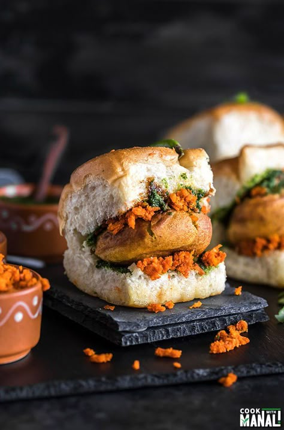

Ingredients
- For Vada (fritter):
- 4 boiled potatoes, mashed
- 1 onion, finely chopped
- 2 green chilies, chopped
- 1 tsp ginger-garlic paste
- 1/2 tsp mustard seeds
- 1/2 tsp turmeric powder
- 1 tsp cumin seeds
- 1/4 cup chopped coriander
- Salt to taste
- Oil for frying
- For Batter:
- 1 cup besan (chickpea flour)
- 1/2 tsp turmeric powder
- Salt to taste
- Water as needed
- For Pav (bun):
- 8 pav buns
- Chutneys (green chutney and tamarind chutney)
Instructions
- For the filling: Heat oil, add mustard seeds, cumin, and chopped onions. Sauté until golden.
- Add ginger-garlic paste, chopped green chilies, turmeric powder, and cook for 2 minutes.
- Add mashed potatoes, salt, and coriander leaves. Mix well and set aside to cool.
- Form small balls with the potato mixture.
- For the batter: Mix besan, turmeric, salt, and water to make a smooth batter.
- Heat oil in a pan. Dip each potato ball into the batter and fry until golden brown.
- Toast pav buns with a little butter on a tawa (griddle).
- Assemble by placing a vada in each pav, and top with green and tamarind chutneys.
- Serve hot with extra chutney on the side.